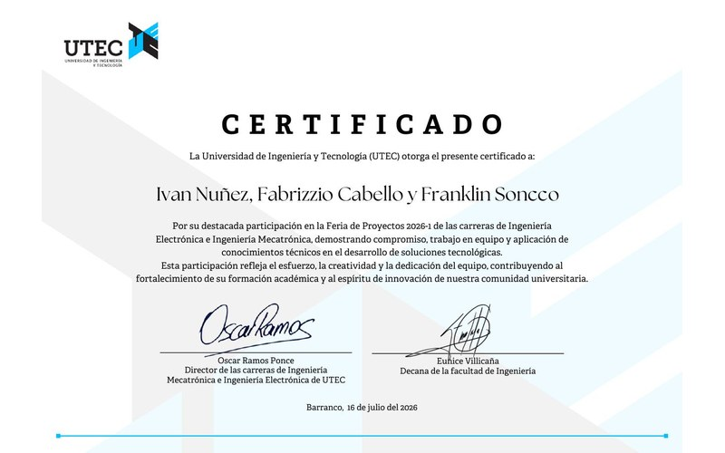

Jul 2026
Exhibition
Selected for the Electronics & Mechatronics Project Fair, UTEC
Our thesis project — a 6-DoF active upper-limb exoskeleton with impedance control and EMG feedback for muscular fatigue reduction in manual coffee harvesting — was chosen among the department's most outstanding projects.
